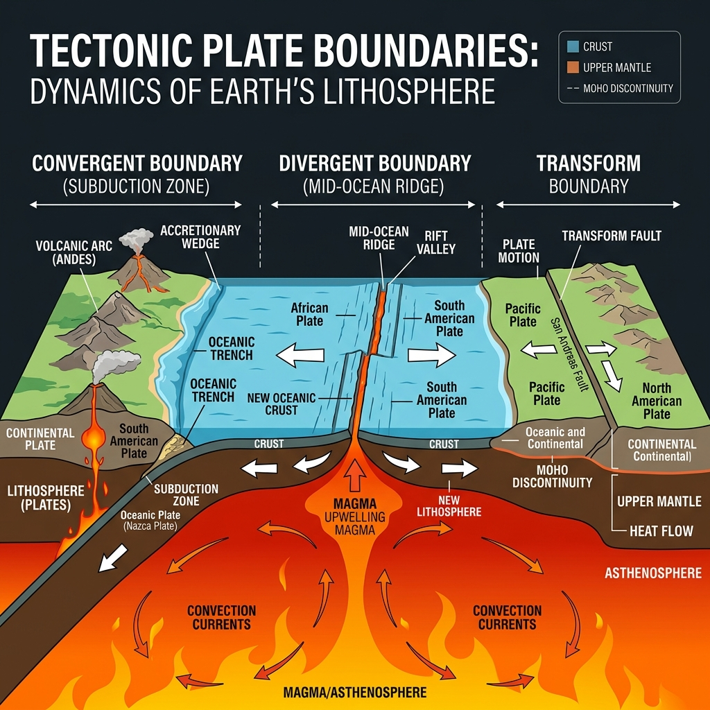
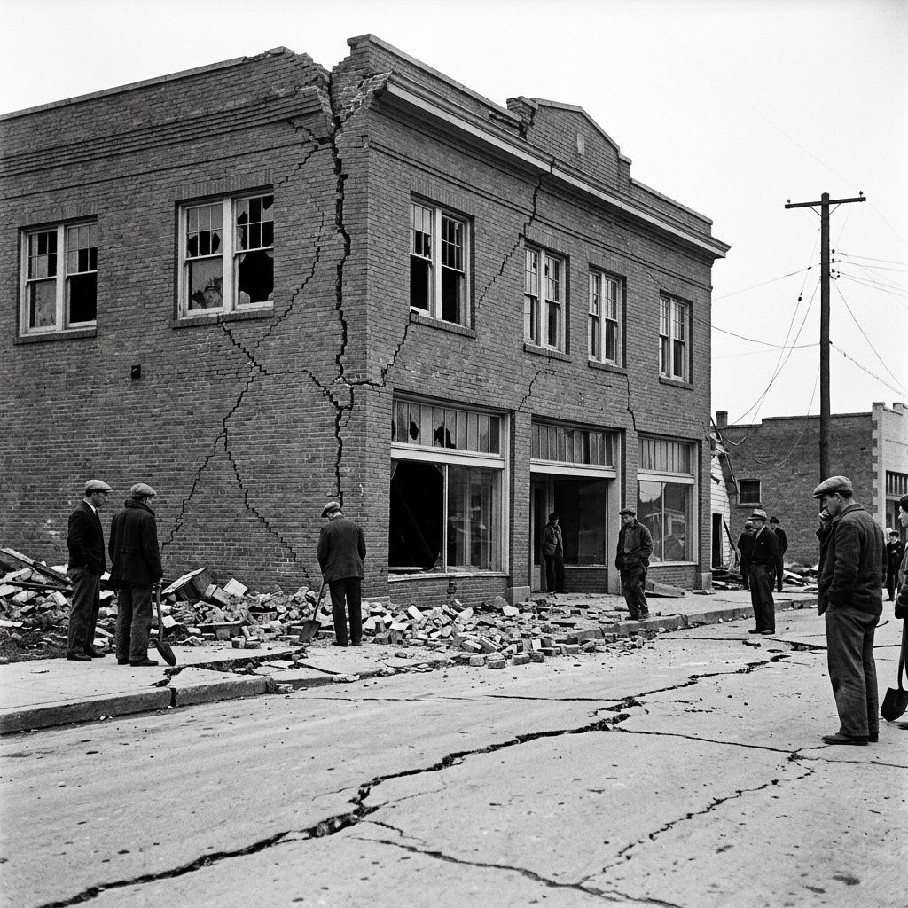

Earth feels solid under our feet. However, our planet's crust (the hard, rocky outer layer of Earth) is actually broken into huge pieces. These pieces are called tectonic plates (giant puzzle pieces that make up Earth's outer shell). Tectonic plates float very slowly on a softer layer of hot, melted rock deep inside the Earth. They move only a few centimetres each year.
As these plates float, they interact in three main ways. First, some plates pull apart from each other. Second, other plates bump into each other. This bumping can push the land up to form giant mountains. Third, some plates slide sideways past one another. The areas where these plates meet are called boundary zones.

The edges of tectonic plates are rough and jagged. As the plates try to move, their rough edges can get stuck together. They stick because of friction, which is a force that resists movement. Even though the edges are stuck, the rest of the plates do not stop moving. They continue to push and pull. This build-up of force creates tension (growing pressure that is stored in the rocks along the boundary).
"Even though the edges are stuck, the rest of the plates do not stop moving... This build-up of force creates tension."
— Tectonic Mechanics
Over time, this pressure becomes too great. The rocks suddenly break or slip. This sudden movement usually happens along a fault (a crack in the Earth's crust where rocks can move). When the rocks suddenly slip, they release a massive amount of stored energy.

This energy travels outward from the break in all directions. It moves as seismic waves (powerful ripples of energy that travel through the ground). These waves make the ground shake. This shaking is what we feel as an earthquake. The point deep underground where the rocks first broke is called the focus. Directly above this point, on the surface of the Earth, is the epicentre (the point on the surface directly above where the earthquake started). The shaking is always strongest near the epicentre. Smaller shakes called aftershocks (smaller earthquakes that happen after the main shaking) can occur for days or weeks.
Scientists measure earthquakes using a seismograph (a special machine that measures the strength of ground movements). By studying earthquakes, we learn how tectonic plates move and how to build safer buildings to protect people.